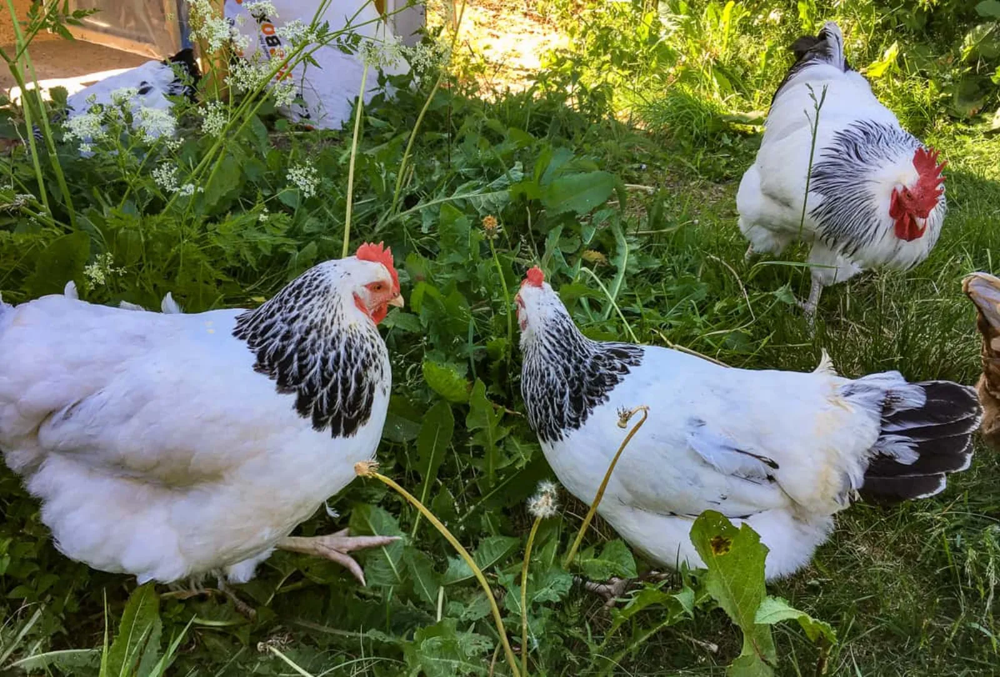
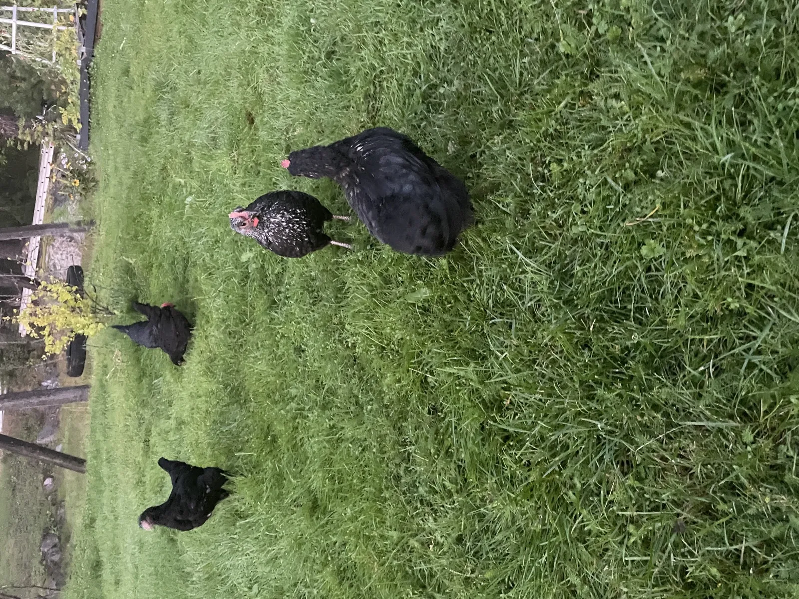

Förra sommaren hade jag fyra svarta höns. Säljaren sa Australorp men de var antagligen blandning. Det jag ångrar mest är att jag inte la två kvällar på att läsa om raser innan jag valde. Den här sidan är därför till mig själv inför sommaren 2026.
En ärlig disclaimer: jag har bara haft mina svarta höns. Allt annat nedan är sammanställt från Svenska Lanthönsklubbens material (särskilt tidningen Hanegället), böcker av Karin Neuschütz och Kristina Odén, och mejl till uppfödare. Där det är min egen erfarenhet säger jag det. Allt annat är andrahandsinformation, så bra det går.
Det finns ingen "bäst i test" på höns. Det är inte produkter. Det är levande djur som ska passa din situation. Det viktiga är att klara av tre saker: vintern där du bor, det utrymme du har, och vad du faktiskt vill ha ut av flocken.
Det sista är där de flesta nybörjarguider missar målet, tycker jag. De trycker hårt på äggproduktion. Men en höna som lägger 280 ägg per år men dör vid två års ålder ger dig 560 ägg totalt. En höna som lägger 200 men lever till sex är minst lika produktiv, och betydligt billigare per ägg. Räkna inte bara på toppårtalet.
Med det sagt. Här är fjorton raser jag övervägt, ungefär i den ordning jag ser dem rekommenderas till svenska nybörjare.

Light Sussex. Den vita med svart krage runt halsen. Förmodligen den ras du har sett om du nånsin sett "klassiska gårdshöns" på ett vykort eller i en barnbok. Engelsk ras från sent 1800-tal. Finns även i buff och speckled men light är den vanligaste i Sverige.
Det är rasen jag hade haft om jag hade vetat bättre i fjol. 250 ägg per år är pålitligt, och de fortsätter värpa över vintern bättre än de flesta, vilket spelar roll i Sverige där december är vad december är. De är lugna, lätta att hantera, och har en lång historia av att klara nordeuropeiska vintrar utan tillsatsvärme.
Tillgänglighet är hyfsad. Flera svenska uppfödare har dem, och Granngården brukar ha unghöns på våren. Räkna med 150-300 kr per ungdjur.
Vikt: 3-3,5 kg · Ägg: 250-280/år · Livslängd: 6-8 år · Ursprung: England · Vinterhärdighet: god
Hedemorahönan är Sveriges mest köldhärdiga ras. Det är inte en åsikt. Det är en konsekvens av att hon har det som hönsfolk kallar "dubbeldun", ett extra lager underdun som andra raser saknar. Hennes ben ser ut som hon har på sig byxor. Kammen är låg, vilket minskar risken för förfrysning. Hon är gjord för Dalarna i februari.
Rasen var nära utdöd. På 80-talet räddades den i princip av en flock från byn Trollbo, och alla nu levande Hedemorahöns härstammar från genbanken som byggdes upp utifrån den. Rasen förvaltas idag av Svenska Lanthönsklubben, och du köper henne från en uppfödare med genbanksintyg. Inte från Blocket.
Cirka 180 ägg per år. Det är inte rekord. Men det är pålitliga ägg från en höna som lever i 6-8 år och som klarar vintern utan extra åtgärder. Bor du norr om Mälardalen är det här rasen jag hade tittat på först. Läs mer om höns på vintern.
Vikt: 2-2,5 kg · Ägg: 150-200/år · Livslängd: 6-8 år · Ursprung: Dalarna, Sverige · Vinterhärdighet: utmärkt

Det här var rasen mina mörka höns påstods vara, så jag har lite egen erfarenhet. Men jag säger lite. Fyra höns en sommar är inte ett representativt urval, och som sagt vet jag inte ens säkert att det var renrasiga djur.
Australorp är australisk, ursprungligen från Black Orpington-stam som exporterades dit i slutet av 1800-talet och vidareutvecklades. Helt svart fjäderdräkt med en grön metallglans i solljus. Riktigt vacker ras faktiskt, mer än jag förväntat mig av en "svart höna". En Australorp satte 1922 världsrekordet i äggläggning med 364 ägg på 365 dagar, vilket är absurt och inte representativt men illustrerar kapaciteten.
Mina höns var sociala på det sätt höns är sociala. De kände igen mig som "personen med matskålen" och kom springande, men de gillade inte att bli upplyfta. De värpte stadigt under sommaren.
Bra ras för svenska förhållanden. Köldtålig nog för Svealand, mycket ägg, hyfsad tillgänglighet.
Vikt: 3-3,5 kg · Ägg: 250-300/år · Livslängd: 6-8 år · Ursprung: Australien · Vinterhärdighet: god
Den randiga Barred Rock är vad de flesta tänker på när rasen kommer på tal. Amerikansk, 1800-tal, var länge USA:s dominerande gårdshöna innan industrihybriderna tog över på 50-talet.
Snäll, social, robust, klarar svenska vintrar fint. Lägger 200-250 ägg per år, vilket är solitt utan att vara extrem. Mindre vanlig i Sverige än Sussex. Du får leta lite, men finns hos uppfödare via SLK-listan.
Bra val om du har barn som ska få vara med och sköta höns. De tolererar hantering bra utan att bli stressade. Inte lika "kelig" som Orpington, men inte heller lika ofta sjuk eller ömtålig.
Vikt: 3-3,5 kg · Ägg: 200-250/år · Livslängd: 6-8 år · Ursprung: USA · Vinterhärdighet: god
Stor, fluffig, extremt lugn. Buff Orpington, den guldgula varianten, är vanligast och ser ut som en levande pompon. De vägs ofta in på 4 kilo, vilket är väldigt mycket höns.
Det är "barnens ras". Orpington söker kontakt, går gärna i knät, och blir tama på ett sätt andra höns sällan blir. Köpekostnaden är ganska hög, räkna med 250-400 kr per ungdjur från renrasig uppfödare, och äggproduktionen ligger i den lägre änden, runt 180-220 per år.
Kompromissen är temperamentet. Vill du ha höns som är så mycket sällskapsdjur som det går att komma med höns, är det här rasen.
Vikt: 3,5-4 kg · Ägg: 180-220/år · Livslängd: 6-8 år · Ursprung: England · Vinterhärdighet: god
Fransk ras, känd för en sak: chokladbruna ägg. Inte lite bruna. Riktigt mörka, nästan terrakottafärgade. Äggen bleknar lite under säsongen men återställs efter ruggningen. Om du tycker att ägg bara är ägg: korrekt. Men om du nånsin vill ge bort ägg till grannar och se reaktionen, Maran-ägg levererar.
Rasen kommer från trakten kring Marans i sydvästra Frankrike. Copper Black Marans (svart med kopparglans runt halsen) är den vanligaste varianten i Sverige. De är aktiva, lite mer självständiga än Sussex, och trivs bäst med ordentlig utomhusyta.
Vinterhärdigheten är hyfsad men inte lika bra som Hedemora eller Brahma. I Svealand klarar de sig utan tillsatsvärme. I Norrland hade jag velat ha ett isolerat hönshus.
Vikt: 3-3,5 kg · Ägg: 200-250/år · Livslängd: 6-8 år · Ursprung: Frankrike · Vinterhärdighet: hyfsad
Brahma är enorm. En tupp kan väga 5 kilo. Hönorna runt 4. De kallas ibland "king of chickens" och det är inte överdrivet. Fjäderbyxor ner till tårna, ärtkam (liten, tät mot huvudet), och ett lugn som gränsar till likgiltighet.
Storleken är både fördelen och nackdelen. De behöver mer mat, mer plats, och bredare sittpinnar. Men de ger värme i hönshuset, de är snälla mot mindre raser, och de är extremt köldhärdiga tack vare den täta fjäderdräkten och den låga kammen. De är också förvånansvärt dåliga på att flyga, så ett staket på 90 cm räcker.
Äggproduktionen är medelmåttig — runt 150-200 per år — och äggen är förvånansvärt små i förhållande till hönans storlek. Men som sällskap i trädgården finns det få raser som matchar. Barn älskar dem.
Vikt: 4-5 kg · Ägg: 150-200/år · Livslängd: 6-8 år · Ursprung: USA (från asiatisk stam) · Vinterhärdighet: utmärkt
Silver Laced Wyandotte — svarta fjädrar med silvervit kant — är en av de vackraste hönsen jag sett. Det ser ut som varje fjäder är handmålad. Finns i ett dussin färgvarianter men silver och guld är vanligast i Sverige.
Rasen är amerikansk, uppfödd som dubbelmålshöna (ägg och kött) och designad för kalla vintrar i nordöstra USA. Roskam istället för enkel kam, vilket eliminerar förfrysningsrisken. Kompakt kropp som håller värmen väl.
Temperamentet varierar. De flesta uppfödare beskriver dem som "lugna men lite reserverade". Inte lika tam som Orpington, inte lika aktiv som Maran. Mitt i fältet. Men 200-250 ägg per år och pålitlig vintervärpning gör den till en stark allroundkandidat.
Vikt: 3-3,5 kg · Ägg: 200-250/år · Livslängd: 6-8 år · Ursprung: USA · Vinterhärdighet: mycket god
Araucana lägger blåa ägg. Inte blågrå eller "nästan gröna" — genuint pastellblåa. Det beror på ett pigment (oocyanin) som genomfärgar hela skalet, inifrån och ut. Det är genetiskt, inte kostrelaterat.
Rasen är sydamerikansk, troligen flera hundra år gammal, och skiljer sig från andra höns genom att sakna stjärtfjädrar (i den riktiga Araucana-typen). De flesta som säljs i Sverige är dock korsningar, ofta kallade "easter eggers", som lägger ägg i gröna och blåa toner men inte är renrasiga Araucana.
Temperamentet är livligt. De är nyfikna, lite flyktbenägna, och kräver en högt inhägnad gård. Äggproduktionen ligger på 200-250 per år. Om du vill ha det mest intressanta ägget i en korg med Sussex- och Maran-ägg bredvid är det här sättet.
Vikt: 2-2,5 kg · Ägg: 200-250/år · Livslängd: 6-8 år · Ursprung: Chile · Vinterhärdighet: hyfsad
New Hampshire utvecklades i USA på 1910-20-talet genom att selektera Rhode Island Red för snabbare tillväxt och bättre äggläggning. Resultatet är en robust, rödgul höna som gör lite av allt: bra ägg, bra kött, bra temperament.
Jag ser dem sällan nämnas i svenska guider, men SLK listar aktiva uppfödare och de dyker upp på Blocket ibland. De är inte lika populära som Sussex eller Australorp men det gör dem inte sämre. Snarare tvärtom — enklare att hitta bra djur från uppfödare som bryr sig, eftersom efterfrågan inte är lika hög.
Klarar vintern bra, är inte speciellt sjukbenägen, och lägger 200-280 ägg per år. En underskattad allroundras.
Vikt: 3-3,5 kg · Ägg: 200-280/år · Livslängd: 5-7 år · Ursprung: USA · Vinterhärdighet: god
Det här är inte riktigt en ras i traditionell mening. Lohmann Brown är en kommersiell hybrid från det tyska avelsföretaget Lohmann Tierzucht. Det är ett produktnamn, ungefär som Volvo XC60. Hon är vad de flesta svenska kommersiella äggproducenter använder.
300+ ägg per år är standardvärde. Det är extremt produktivt. Men: hybriden är optimerad för 18-24 månaders intensiv värpning, sen avtar produktionen kraftigt, och hon lever vanligen 3-4 år totalt jämfört med 6-8 för en lantras.
Mitt sätt att tänka om Lohmann Brown: det är OK att ta hand om dem, men förstå vad du köper. Det bästa du kan göra är att kontakta en lokal äggproducent som ska rotera ut sin flock. Du kan ofta köpa "utgångna värpare" för 50-150 kr per styck. Hon har då 1-3 år kvar i en bra trädgård i stället för att sluta som soppkyckling. För både dig och henne är det en fin deal.
Vad jag däremot inte skulle göra är att köpa nya Lohmann från ett kläckeri för 150 kr och tro att jag fått en husdjurshöna. Hon är konstruerad för en annan funktion.
Vikt: 2-2,5 kg · Ägg: 300+/år · Livslängd: 3-4 år · Ursprung: Tyskland (hybrid) · Vinterhärdighet: hyfsad
Genetiskt variabel på ett sätt som är märkligt vackert. Varje individ ser olika ut. Spräcklig fjäderdräkt i kombinationer av svart, vit, brun, blågrå. Ingen flock ser likadan ut två gånger.
Bevarandevärd ras under SLK med genbanksintyg. Det betyder i praktiken att om du köper en blommehöna är du med och bevarar svenskt lantbruksarv. Aktiv personlighet. Hon trivs inte trångt och vill ha ordentligt med utomhusyta att gräva i. Lägger ungefär 180 ägg per år.
Vikt: 2-2,5 kg · Ägg: ~180/år · Livslängd: 6-8 år · Ursprung: Skåne, Sverige · Vinterhärdighet: hyfsad
Inte en äggvärpare. 80-120 ägg per år, små, krämfärgade.
Hon är på listan av en annan anledning. Silkeshönan är en av de bäst ruvande hönorna som finns. Vill du nånsin kläcka egna ägg utan att köpa kläckare lägger du in dem under en silkeshöna och hon gör jobbet. Det är hennes specialitet och hon är så bra på det att uppfödare av helt andra raser ofta håller en silkeshöna eller två som "kläck-höna".
Fjäderdräkten saknar hakstrukturen som binder ihop vanliga fjädrar. Det är därför hon känns silkig snarare än fjädrig. Konsekvensen är att hon inte är vattentät. I regn blir hon genomblöt på ett sätt en Sussex aldrig blir. Hon behöver torrt hönshus och tål svenska höstar dåligt om hon inte får skydd.
Mer prydnadshöna än brukshöna, men ingen annan ras gör vad hon gör.
Vikt: 1-1,5 kg · Ägg: 80-120/år · Livslängd: 7-9 år · Ursprung: Kina · Vinterhärdighet: dålig
Dvärghöns är inte en ras utan en kategori. De flesta stora raser finns i dvärg-variant: dvärg-Wyandotte, dvärg-Orpington, dvärg-Sussex. Dessutom finns äkta dvärgraser som Sebright och Holländsk dvärghöna, som inte har en stor motsvarighet.
Poängen med dvärghöns: de äter mindre (ungefär hälften), behöver mindre utrymme, och gör mindre skada i trädgården. Äggen är små men proportionellt fler i förhållande till kroppsstorlek. Om du har en liten tomt — rad- eller kedjehus — och vill ha höns utan att offra hela gräsmattan kan dvärghöns vara svaret.
Varningen: blanda inte dvärgar med stora raser i samma flock. De hamnar längst ner i hackordningen och kan bli skadade. Håll dem för sig.
Vikt: 0,5-1,5 kg · Ägg: varierar (100-200/år) · Livslängd: 5-8 år · Ursprung: varierar · Vinterhärdighet: varierar
| Ras | Ägg/år | Vikt | Livslängd | Vinter | Bra för |
|---|---|---|---|---|---|
| Sussex | 250-280 | 3-3,5 kg | 6-8 år | God | Pålitlig allroundval |
| Hedemora | 150-200 | 2-2,5 kg | 6-8 år | Utmärkt | Norrland, vinterträdgård |
| Australorp | 250-300 | 3-3,5 kg | 6-8 år | God | Mycket ägg, vacker fjäder |
| Plymouth Rock | 200-250 | 3-3,5 kg | 6-8 år | God | Familjer |
| Orpington | 180-220 | 3,5-4 kg | 6-8 år | God | Tama höns, barn |
| Maran | 200-250 | 3-3,5 kg | 6-8 år | Hyfsad | Chokladbruna ägg |
| Brahma | 150-200 | 4-5 kg | 6-8 år | Utmärkt | Imponerande storlek, snäll jätte |
| Wyandotte | 200-250 | 3-3,5 kg | 6-8 år | Mycket god | Vacker fjäder, vintervärpning |
| Araucana | 200-250 | 2-2,5 kg | 6-8 år | Hyfsad | Blåa ägg, nyfiken personlighet |
| New Hampshire | 200-280 | 3-3,5 kg | 5-7 år | God | Underskattad allround |
| Lohmann Brown | 300+ | 2-2,5 kg | 3-4 år | Hyfsad | Ren äggproduktion |
| Skånsk blommehöna | ~180 | 2-2,5 kg | 6-8 år | Hyfsad | Kulturarv, unika individer |
| Silkeshöna | 80-120 | 1-1,5 kg | 7-9 år | Dålig | Ruvning, prydnad |
| Dvärghöns | 100-200 | 0,5-1,5 kg | 5-8 år | Varierar | Liten tomt, mindre foder |
Om du räknar per år: Lohmann Brown med 300+ ägg. Men hon lever 3-4 år. Om du räknar per livstid: en Sussex som lägger 250 per år i sex år slår henne komfortabelt. En Australorp likaså.
Min rekommendation för den som vill ha många ägg i trädgården: Sussex eller Australorp. Bäst kombination av volym, livslängd och lättskött temperament. Läs mer i guiden skaffa höns.
Hedemora, Brahma och Wyandotte är de tre bästa. Hedemora har dubbeldun, Brahma har enorm fjädermassa, och Wyandotte har roskam som inte fryser. Sussex och Plymouth Rock klarar sig också bra i Svealand. Undvik raser med stor enkel kam (som Leghorn) om du bor norr om Dalälven.
Mer om detta i höns på vintern.
För renrasiga: Svenska Lanthönsklubben (lanthonsklubben.se) har en medlemslista över uppfödare, och tidningen Hanegället har annonser. Blocket fungerar för vanliga raser men kvaliteten varierar. Granngården och Hönshuset.se säljer unghöns säsongsvis under våren.
För hybrider (Lohmann Brown m.fl.): kontakta lokala äggproducenter och fråga om de säljer utgångna värpare. Du kommer ofta hem med 4-6 höns för 50-150 kr per styck. Be alltid om salmonellaprov.
Ja, det är vanligt och fungerar oftast bra. Två varningar: blanda inte dvärgraser med stora raser (de mindre hamnar längst ner i hackordningen och kan bli skadade), och introducera nya höns genom att sätta dem i hönshuset på natten. När de vaknar är de kollektivt förvirrade och accepterar varandra mycket lättare än om de möts mitt på dagen.
Jag lutar mot Sussex eller Hedemora. Beslutar i sommar.
Senast uppdaterad: maj 2026. Läs också: skaffa höns · höns på vintern · skydda höns mot räv · vad kostar höns?